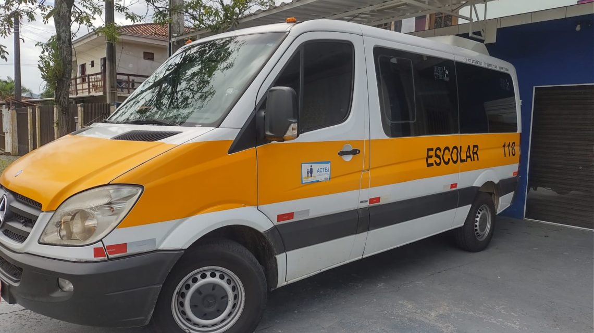

Transporte Escolar 118
Escolas
Bairros
História
Confiança, amor e cuidado transmitidos entre gerações!

Principais Escolas e CEI:
Escola Municipal Witth Freitag
Escola Municipal Eladir Skibinski
Escola de Educação Básica Maria Amim Ghanem
Colégio Santo Antônio
CEI Aventura de Criança
CEI Arte e Vida
CEI Castelo Branco
Principais Bairros e Ruas:
Iririú
Comasa
Aventureiro
Jardim Iririú
Cegonha, Jorge Cecin, Albano Schmidt
Binário, Papa João XXIII, Iririú
Rio do Ferro, Tuiuti
Nossa história:
Blá blá blá blá blá
WhatsApp
|
(47) 98474-5728